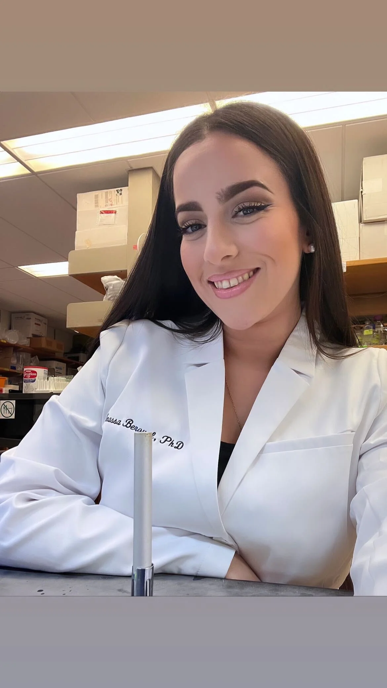
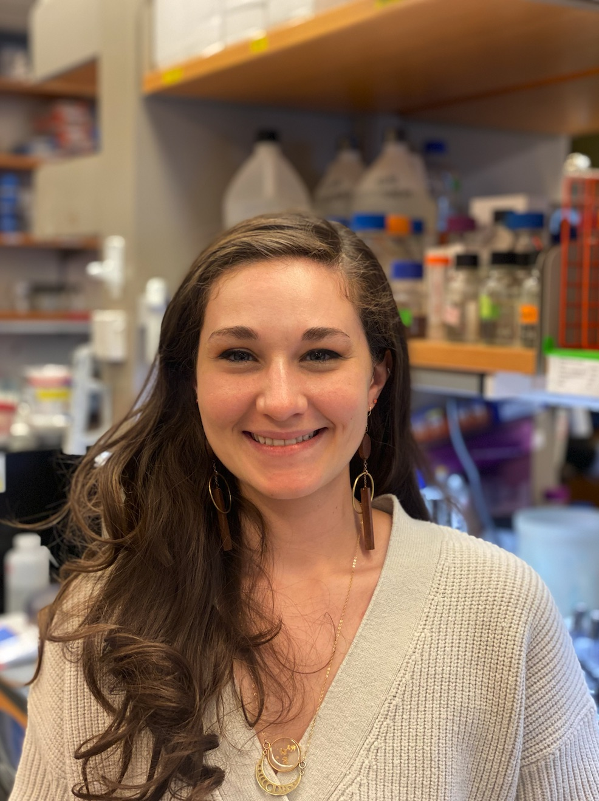
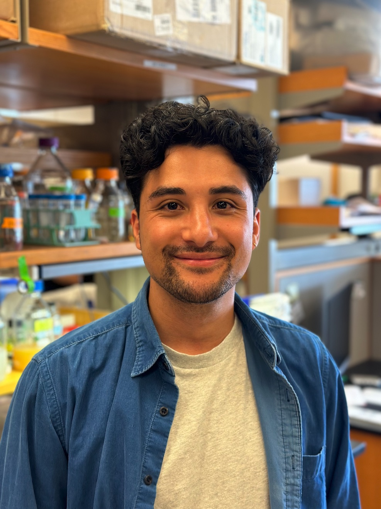
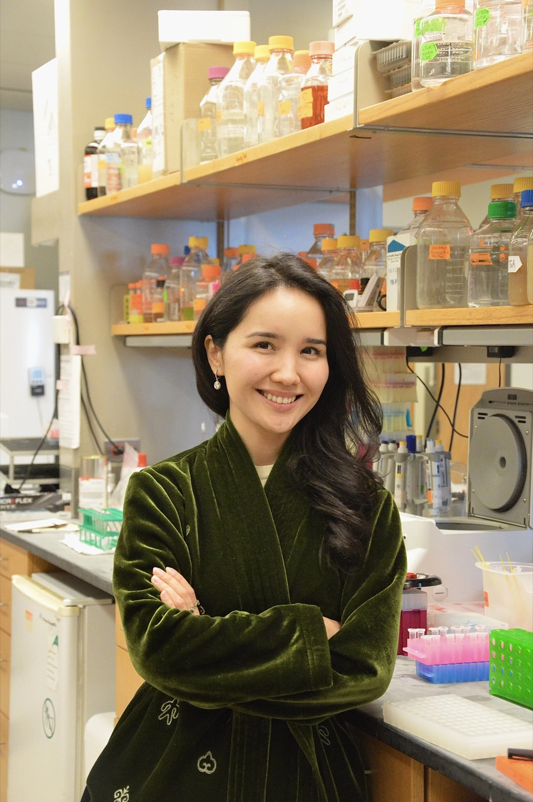
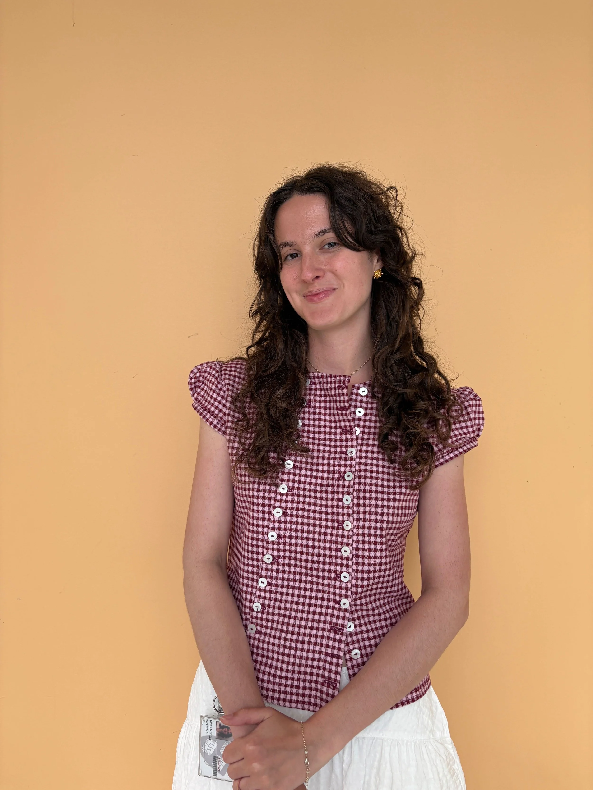
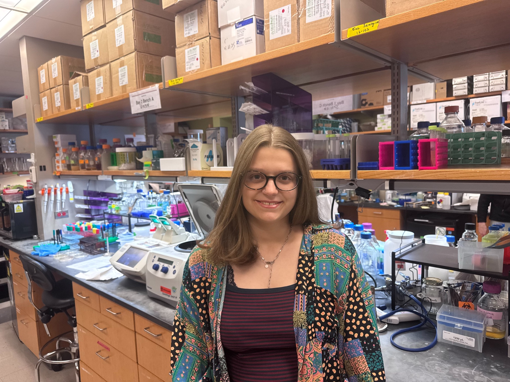

Thomas Bernhardt
Professor in the Department of Microbiology at Harvard Medical School and Investigator of the Howard Hughes Medical Institute.
Team
Current Bernhardt Lab members across research staff, postdoctoral fellows, graduate students, and undergraduate researchers.
Showing 20 current lab members
Professor in the Department of Microbiology at Harvard Medical School and Investigator of the Howard Hughes Medical Institute.







Postdoctoral Research Fellow | Funded by the Swiss National Science Foundation



Postdoctoral Research Fellow | Community Phages Internship Lead Instructor


Postdoctoral Research Fellow | Life Sciences Research Foundation Fellow

